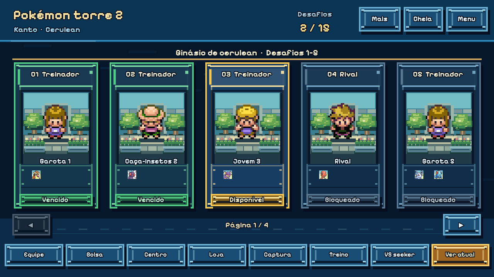
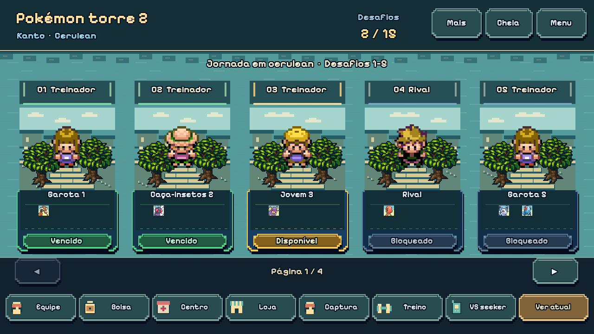
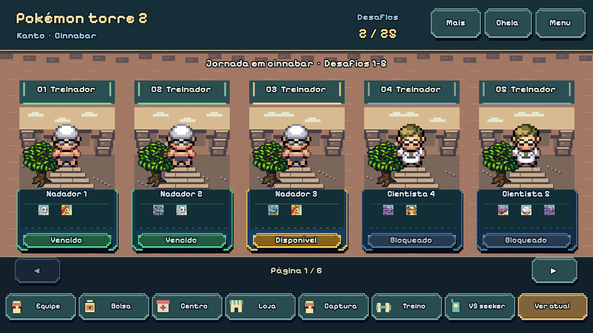
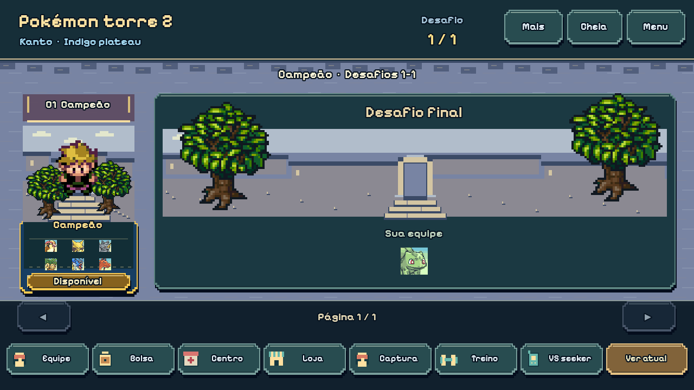
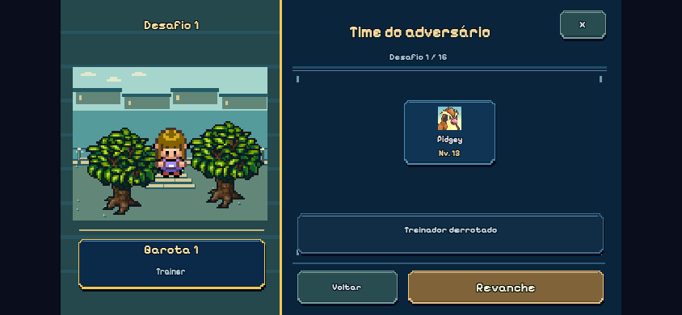
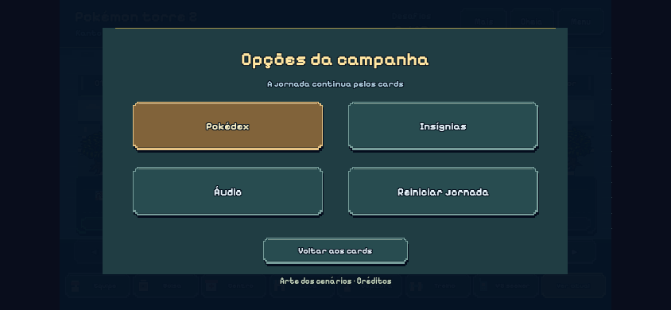

Campanha — composição regional e pixel art real
Capturas do Phaser com Alpha 0.65.8. Saves preparados para revisão visual. Batalhas preservadas.
Antes — Cerulean
Depois — Cerulean
Cinnabar
Liga — aproveitamento da página final
Detalhe do treinador — celular na horizontal
Opções externas
Arte: LPC Trees Mega-Pack, autores e licença CC-BY-SA 3.0 em créditos completos. Atlas sem edição de pixels.